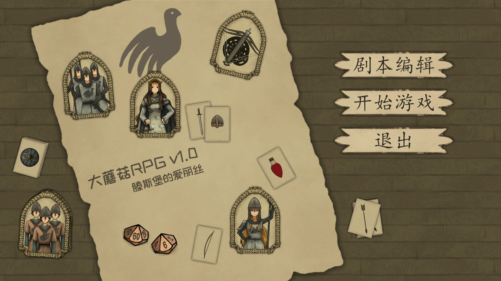
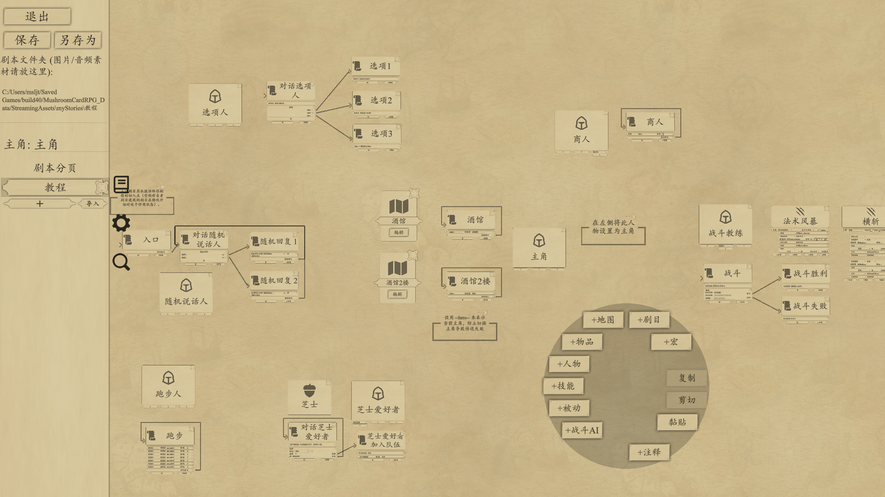
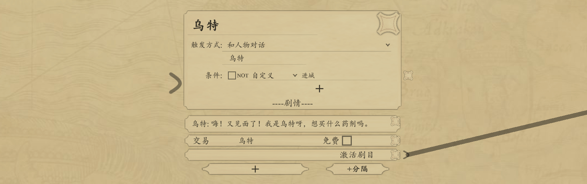
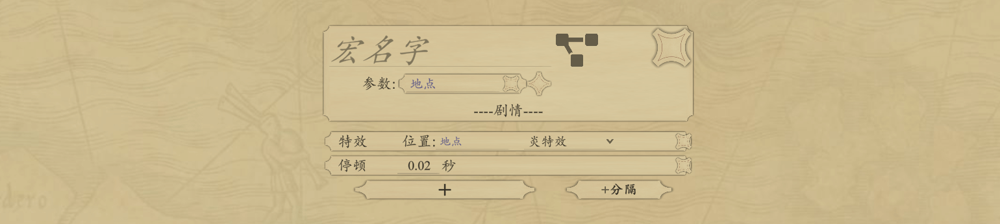
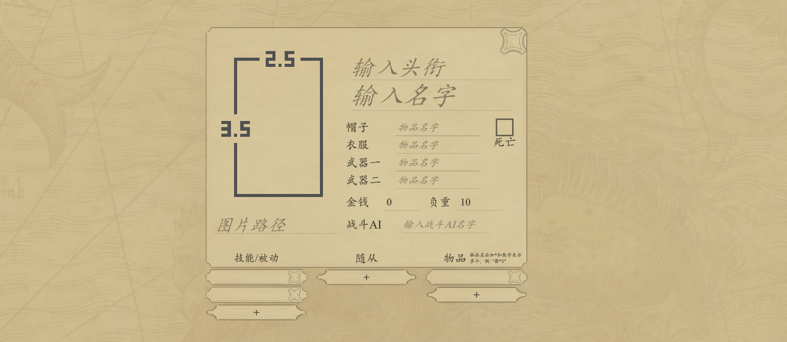
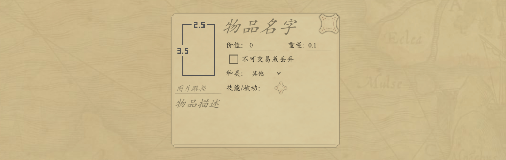
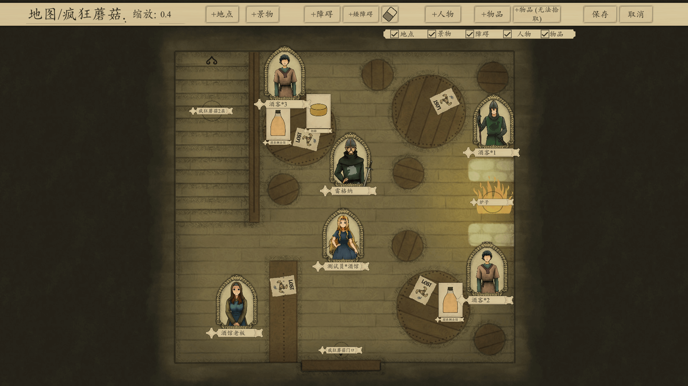
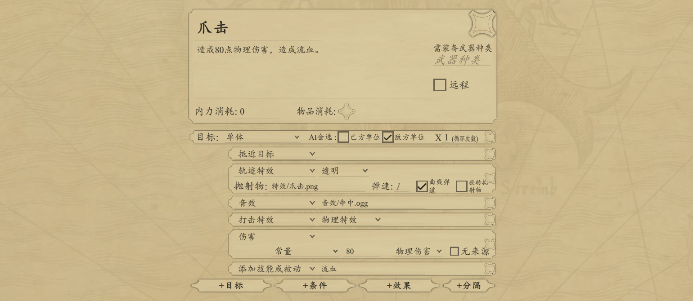
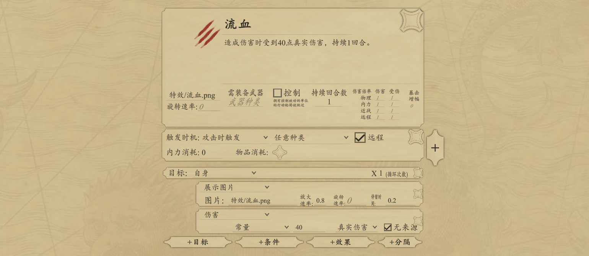
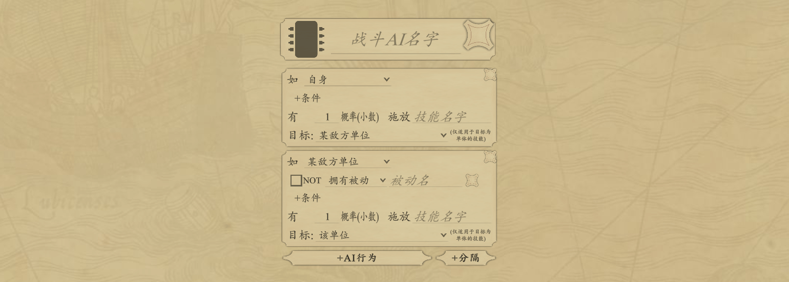

剧本编辑： 进入故事板编辑剧本开始游戏： 游玩编辑好的剧本
ctrl + 滚轮： 缩放鼠标中键拖动： 拖动故事板鼠标右键： 呼出菜单鼠标左键： 选中鼠标左键拖动： 框选Ctrl + Z：撤销Ctrl + Shift + Z 或 Ctrl + Y：取消撤销游戏图片/音频素材请放入这个文件夹或它的子文件夹内。
输入游戏主角名字（需有对应的人物在故事板中）
ctrl+f搜索选中的文本
触发方式游戏中是触发剧目所需的方式，包括对话人物，进入地区等
剧目触发过一次后不会再次触发（环形流程除外）
当两个不同剧目的触发方式和条件同时被满足时，会触发优先级更高的剧目。
在一个剧目A中添加剧情元素激活剧目（或选项等其他有激活剧目箭头的剧情元素）拖动箭头">"，连接到另一个剧目B左边的接收槽">"在一个剧目A中添加剧情元素激活剧目（或选项等其他有激活剧目箭头的剧情元素）拖动箭头">"，连接到另一个剧目C左边的接收槽">"在一个剧目B中添加剧情元素激活剧目（或选项等其他有激活剧目箭头的剧情元素）拖动箭头">"，连接到另一个剧目C左边的接收槽">"点击剧目C左边的接收槽">"， 打开&&开关再次点击剧目C左边的接收槽">"， 关闭&&开关激活一个自定义条件
移除一个条件
激活一个剧目，使其进入可激发态
增加一个计数器的值，用于条件判断
给玩家选择的选项
点击编辑点击“+”按钮添加选项输入选项内容使用箭头连接该选项激活的剧目可通过传送主角实现地图间的切换
人物会随机移动到目的地地点范围内的某个点上，因此可以用目的地地点范围的大小来调节移动路径的随机性
点击编辑点击“+”按钮添加对话输入说话人物名字输入说话内容输入配音音频文件名（可选）输入自动跳过时间（不填则为鼠标点击/空格跳过）输入特殊立绘图片名（可选）展示图片，点击跳过
展示一张图片，只能被移除背景移除。
移除当前展示的背景。
不填为停止播放当前BGM
交易中购买物品需支付等于物品价值的金钱，出售则获得物品价值80%的金钱
某个人物获得金钱
某个人物获得并装备物品，如果装备槽位已有装备，则旧装备放回背包中
请求主角交付金钱或物品， 成功或失败都可激活剧目
展开战斗，胜利或失败都可激活剧目
给当前进行中的战斗添加援兵
将某个人物切换为主角
切换主角后注意保证主角相关剧目的正常触发，见主角代号
不填为移除景物当前的图片
所有在条件域内的剧目需要满足条件域的条件才能触发. 通常会用在只在某个任务中触发的剧情。
右键菜单 -> +条件域 宏是一组可以复用的剧情元素，并且可以传入参数。
右键菜单 -> +宏
右键菜单 -> +人物| 参数 | 描述 |
|---|---|
| 头衔 | 人物头衔 |
| 名字 | 人物名字，如名字包含*号，*号之后的文本在游戏中不显示（见龙套人物） |
| 图片文件名 | 输入人物图片文件名含后缀 |
| 帽子 | 人物所装备的帽子，输入种类为帽子的物品名字 |
| 衣服 | 人物所装备的衣服，输入种类为衣服的物品名字 |
| 武器一 | 人物所装备的武器，输入种类为武器的[物品]，某些种类的技能需要装备对应种类的武器才能发动 |
| 武器二 | 同上 |
| 物品 | 人物背包中的物品名字），使用物品名*4的格式来表示复数 |
| 技能/被动 | 人物拥有的技能/被动名 |
| 随从 | 随从人物名字。见随从人物 |
有时游戏需要龙套型的人物，比如四个卫兵。他们不需要具体姓名。将四个卫兵的名字设为
卫兵*1, 卫兵*2, 卫兵*3, 卫兵*4
在游戏中，他们的显示名字会省略*号和*号后面的内容, 均为卫兵
为保证在切换主角后主角相关剧目的正常触发，可以使用主角代号 --hero-- 来指代当前主角名字

右键菜单 -> +物品| 参数 | 描述 |
|---|---|
| 名字 | 物品名字 |
| 图片文件 | 图片文件 |
| 物品描述 | 游戏中显示的物品描述，如有书信类的物品可直接把内容写在描述中便于玩家阅读 |
| 种类 | 物品的种类，包括衣，帽，武器，其他。作用见人物 |
| 武器种类 | 当物品为武器时，可自定义武器的种类（刀剑，暗器等）。技能可以设置需要装备某种种类的武器才可发动。 |
| 价值 | 在交易中购买此物品所需的金钱 |
| 重量 | 在背包中的重量 |
| 不可交易或丢弃 | 防止玩家丢失重要的任务道具 |
| 技能/被动 | 此物品提供的技能/被动名字，如果物品为装备，只有在装备它时才能获得它提供的技能/被动 |

右键菜单 -> +地图输入地图名字点击编辑： 进入地图编辑器输入地图图片文件名： 加载地图图片输入缩放比例： 调整地图图片大小地图上的图片，可以在游戏过程中使用剧情元素：修改景物图片动态修改
地图人物，放置后输入在故事板中定义的人物名。
物品，分可拾取和不可拾取。

右键菜单 -> +技能| 参数 | 描述 |
|---|---|
| 名字 | 输入技能名字 |
| 技能描述 | 游戏中显示的技能描述 |
| 远程 | 是否为远程技能，发动远程技能时不会成为前排 |
| 武器种类 | 技能所需的武器种类，用户自定义。如不为空则该技能需装备对应种类的物品才可发动。 |
| 技能元素队列 | 点击+按钮添加技能元素，技能效果由多个技能元素组成，拖动可排序。见技能元素 |

右键菜单 -> +被动| 参数 | 描述 |
|---|---|
| 名字 | 输入被动名字 |
| 被动描述 | 游戏中显示的被动描述 |
| 种类 | 被动的触发种类 |
| 控制 | 拥有带控制被动的人物的行动将被跳过 |
| 伤害补正 | 输入小数 |
| 技能元素队列 | 点击+按钮添加技能元素，技能效果由多个技能元素组成，发动时由上往下依次发动，拖动可排序。见技能元素 |
技能元素由作用对象，条件，效果组成，由上往下依次发动，拖动可排序。
群体类目标可设置最大目标数，如最大目标数<目标群体人数则随机从目标群体中抽取=最大目标数的单位作为目标
条件决定了效果是否触发，如不满足则跳过此效果
| 类型 | 参数 |
|---|---|
| 概率（独立） | 触发的概率（小数），不填为0 |
| 概率（互斥） | 触发的概率（小数），在此技能元素内，会于其他概率（互斥）条件互斥，例如：有50%互斥概率造成1伤害，50%互斥概率造成2伤害，则只会有两种结果，造成1伤害和造成2伤害 |
| 拥有被动 | 拥有的被动名字 |
| 护甲≥ | 护甲量 |
| 内力≥ | 内力量 |
判定条件的对象，包括施法者，目标
选择之后条件判断会反着来，比如拥有被动a将变为不拥有被动a
对目标造成的技能效果
伤害类的技能效果可选择伤害类型
- 物理伤害
- 内力伤害
- 真实伤害：没有随机波动，无视目标的护甲，也不会触发造成/受到伤害时触发的被动
无来源
- 勾选后伤害没有来源，因此不会触发对伤害来源造成的效果
轨迹特效，打击特效
粒子特效，其中轨迹特效可以添加抛射物的图片（可以自己制作飞刀之类的图片加上去，图片上方为抛射方向）
如果设置了友方人物，友方人物和他的随从会加入玩家一边但不受玩家操控
单位防御力为0时无法行动2回合，2回合后恢复防御
 战斗AI由多个行为单元组成，行动时由上往下依次检测，一旦条件符合就触发该行为定义的技能并停止向下检测，拖动可排序。
右键菜单 -> +战斗AI更换游戏皮肤，屏蔽编辑器和剧本选择来客制化您的游戏便于发布
MushRoomCardRPG_Data/streamingAssets/config/gameSkin文件夹。（程序文件夹路径可在素材路径中查看）为确保不变形，皮肤图宽高比需和原图一致
| 图片文件名 | 描述 | 宽高比 |
|---|---|---|
| button | 通用按钮 | 4 : 1 |
| card | 物品卡/选项卡面板 | 2.5 : 3.5 |
| clothe | 衣服装备槽 | 2.5 : 3.5 |
| cover | 封面图/载入图 | 16 : 9 |
| dead | 死亡标记 | 1 : 2 |
| def | 防御图标 | 1 : 1 |
| dialog | 对话框 | 2160 : 240 |
| hat | 帽子装备槽 | 2.5 : 3.5 |
| label | 长标签 | 8 : 1 |
| mp | 法力图标 | 1 : 1 |
| panel | 通用面板 | 16 : 9 |
| passive | 被动技能按钮 | 4 : 1 |
| sack | 物品图标 | 1 : 1 |
| spell | 技能图标 | 1 : 1 |
| talk | 对话图标 | 1 : 1 |
| weapon | 武器装备槽 | 2.5 : 3.5 |
MushRoomCardRPG_Data/streamingAssets/config/文件夹。（程序文件夹路径可在素材路径中查看）config.jsonMushRoomCardRPG_Data/streamingAssets/config/editorSkin文件夹。（程序文件夹路径可在素材路径中查看）可以删除editorSkin下的所有UI图片，程序会使用一套默认的深色风格UI
| 图片文件名 | 描述 | 尺寸/宽高比 |
|---|---|---|
| background | 背景 | 1 : 1 |
| button | 通用按钮 | 64px * 64px |
| cross | 叉 | 1 : 1 |
| panel | 面板 | 256px * 256px |
通用按钮和面板这两个UI因为使用了border，为确保不变形，像素高度和宽度需和原图一致
背景为重复平铺图片，尺寸越大重复密度越小
MushRoomCardRPG_Data/streamingAssets/config/文件夹。（程序文件夹路径可在素材路径中查看）config.jsonMushRoomCardRPG_Data/streamingAssets/config/文件夹config.jsondisableEditor值改为1如果游戏只有一个剧本，可以屏蔽剧本选择让玩家直接进入存档选择
MushRoomCardRPG_Data/streamingAssets/config/文件夹config.jsondisableScriptPicking值改为1发布使用蘑菇牌RPG制作的游戏是免费的，蘑菇牌RPG只是制作工具，不占有使用其制作的游戏的版权
官方提供的剧本案例，可以学习参考
MushRoomCardRPG_Data/streamingAssets/template/文件夹。（程序文件夹路径可在素材路径中查看）MushRoomCardRPG_Data/streamingAssets/myStories/